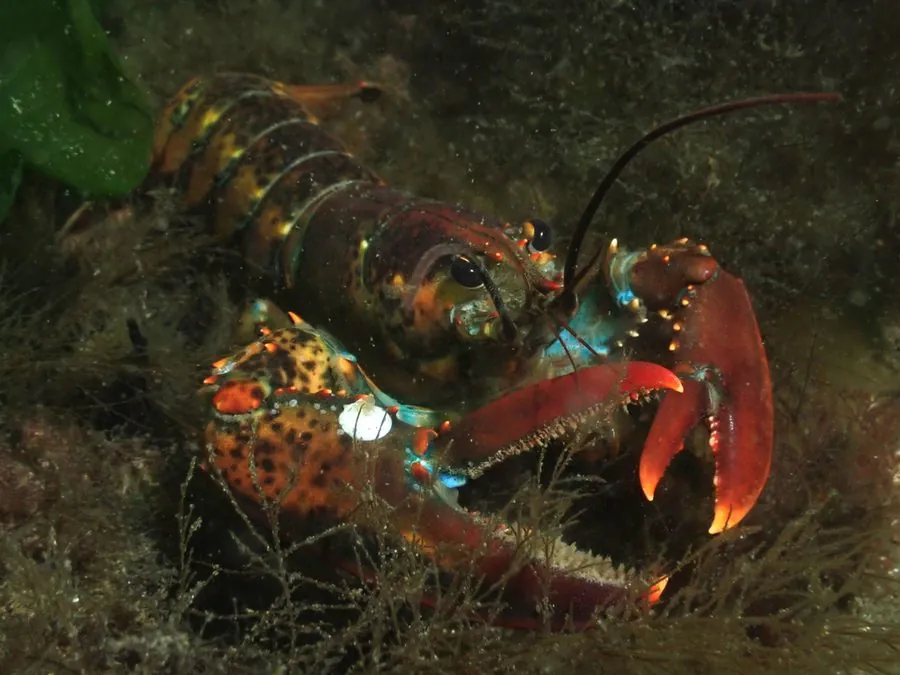

甲壳动物 · 动物界
美洲龙虾 Homarus americanus

北美东海岸的大型海螯虾，第一对足特化成粗大螯足，肉质鲜美，是著名的经济甲壳动物和渔业对象。
- 分类
- 门节肢动物门纲软甲纲目十足目科海螯虾科属海螯虾属
- 栖息环境
- 北美东海岸的岩石、砾石和泥沙海底，昼伏夜出
- 地理分布
- 北美东海岸，从加拿大纽芬兰到美国北卡罗来纳
- 保护级别
- 暂无评估；渔业受配额和尺寸限制管理
物种志
美洲龙虾体长可达 60 cm 以上，体重可超过 20 kg，是体型最大的甲壳动物之一。体色从深绿褐、暗红到蓝黑色变化，第一对步足特化成粗大的螯足，左右螯形态不同，一只用于压碎、一只用于剪切。
它生活在北美东海岸的岩石和泥沙海底，昼伏夜出，杂食，捕食贝类、蟹类、海胆和腐肉，也吃海藻。雌虾抱卵约一年，幼体浮游后沉底。美洲龙虾生长缓慢，寿命可长达数十年，是北美重要的渔业资源，主要捕捞方式为笼捕。过度捕捞、海水升温和栖息地变化对种群造成压力，渔业管理通过最小可捕尺寸、抱卵雌虾保护和配额制度维持资源，它是北美龙虾渔业的核心物种。
形态与习性
- 食性杂食，捕食贝类、蟹类、海胆和腐肉
- 体长可达 60 cm 以上，体重可超 20 kg
- 寿命可活数十年，生长缓慢
- 螯足左右螯分工不同，一只压碎、一只剪切
- 繁殖雌虾抱卵约一年，幼体浮游后沉底
- 渔业北美重要渔业资源，以笼捕为主
趣味知识
- 美洲龙虾的左右螯分工不同，一只负责压碎，一只负责剪切。
- 它的寿命可达数十年，是生长缓慢的长寿甲壳动物。
- 市面上常说的波士顿龙虾，多数其实是美洲龙虾。